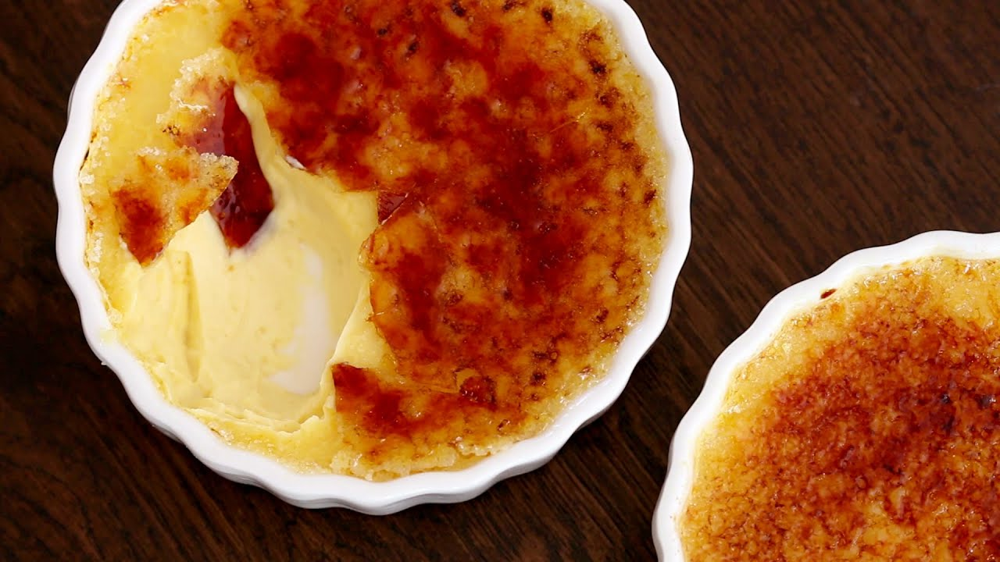
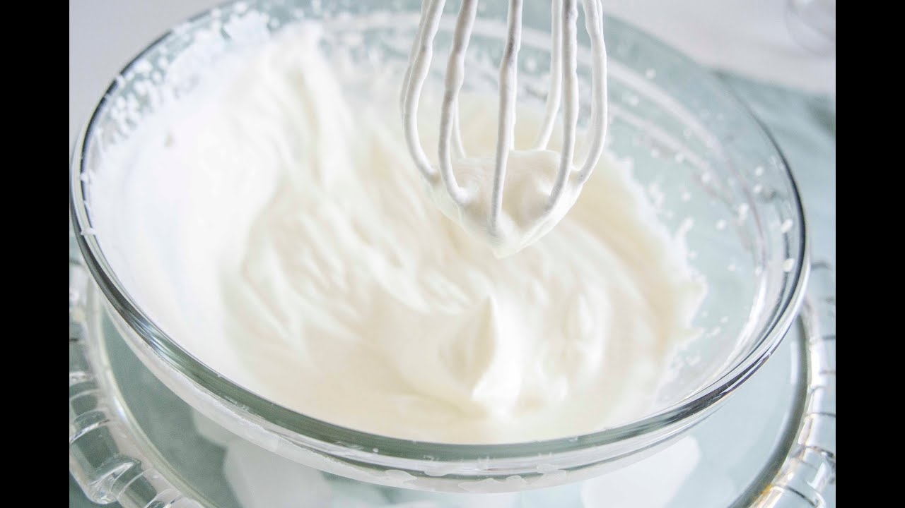

Creme - LEO: Übersetzung im Portugiesisch ⇔ Deutsch Wörterbuch
- Tatafred (@Tatafred1) • Twitter
Die Creme in kleine Förmchen füllen und mindestens 2 Stunden kühlen. Beeren mit Vanillezucker sowie dem restlichen Kirschwasser marinieren und durch ein Sieb passieren. Die Förmchen auf Teller stürzen, passierte Beeren als Fruchtspiegel um die Bayerische Creme geben und mit frischen Erdbeeren, Himbeeren und jeweils einem Minzeblatt garnieren. - ᐅᐅNoreva Exfoliac Getönte Creme • Die momentan populärsten ...
Gesichtscreme selber machen: So können Sie eine Hyaluronsäure-Creme selber mac… ist auch eine der beliebtesten Kategorien auf Pinterest, wie hautpflege produkte selber machen und andere. Daher denke ich, dass mein Profil für Leute sehr nützlich sein wird, die Schlussfolgerungen zu diesen Kategorien von Hautpflege Selber Machen und ... - Nanovein Premium Creme kaufen → €29.00 [Top Angebot] – baaboo
Nanovein Premium günstig kaufen - Preisvergleich. Die Creme Nanovein Premium bekommst Du zum einen über den Hersteller (€39.00) über einige Händler auf eBay (bis zu €51.89) oder direkt hier bei baaboo für (€29.00).Wir bei baaboo haben zur Zeit nicht nur einen günstigen Preis sondern bieten Nanovein Premium auch in der Größe 75 ml statt 50 ml an. Ein Top Angebot! - Kokosöl Creme gegen Schuppenflechte selber machen - Rezept ...
Welche Kriterien es beim Bestellen seiner Noreva Exfoliac Getönte Creme zu beurteilen gibt! Zudem hat unser Team schließlich eine hilfreiche Checkliste als Entscheidungshilfe gesammelt - Damit LSF 20 - Durch den Lichtschutzfaktor 20 schützt die getönte Feuchtigkeitscreme vor äußeren Einflüssen und lichtbedingter Sie zu Hause unter all den Noreva Exfoliac Getönte Creme der Noreva ... - Cremeataston (@Cremeataston) • Twitter
Creme gegen Gel Obwohl wir sowohl Creme als auch Gel verwenden, um sie auf unseren Körper aufzutragen, gibt es einen Unterschied zwischen ihnen. Es gibt viele Arten von Schönheits- und Hautpflegeprodukten auf dem Markt, die in Form von Cremes, Lotionen, Gelen und Salben erhältlich sind. - Les Vitalities Creme - Bewertungen, Preis und Bezugsquellen?
Nivea Creme Soft Flüssigseife, 250 ml Extra-reichhaltig mit Mandelöl Schützt die Hände vor dem Austrocknen pH-hautneutral Hautverträglichkeit dermatologisch bestätigt Entdecken Sie die intensive Pflege von NIVEA MPN:80700 Cashmere Moments Milde Cremeseife mit Cashmere-Proteinen und Orchideenduft. - Nivea Creme soft Flüssigseife 250ml günstig kaufen ...
We would like to show you a description here but the site won’t allow us. - Neck Creme Anti Aging Falten Entfernung Creme Bleichen ...
LE LIFT La Crème Main ist wie eine Anti-Aging-Pflege konzipiert und bewahrt das jugendliche Aussehen der Hände, denn meist sind an ihnen die ersten Altersanzeichen zu erkennen. Die Formel verbindet die Kraft eines botanischen Alfalfa-Konzentrats, so leistungsstark wie Retinol* und dabei sanft zur ... - Herren-Schleife stilsichere Seide creme | Einstecktuch.com
Kokosöl Creme gegen Schuppenflechte selber machen – Rezept & Anleitung Kokosöl Kosmetik selber machen – Rezept für selbst gemachte Kokosöl... - Candidol Creme | Kampf gegen Mykose und Pilz um die Füße
Hydro Creme - mit Anti Aging Effekt Schütze Deine Haut vor Umwelteinflüssen und spende ihr genügend Feuchtigkeit. Angereichert mit Q10 und Hyaluronsäure sagt die feuchtigkeitsspendende HydroCreme der Hautalterung und den unliebsamen Falten dem Kampf an... Für ein schönes, frisches Hautbild mit mehr Spannkraft und Elastizität!
Home
Wörterbuch
Forum Trainer Kurse Toolbars & Apps Hilfe & Weiteres Português WerbungSie scheinen einen AdBlocker zu verwenden.
Wollen Sie LEO unterstützen?
Dann deaktivieren Sie AdBlock für LEO oder spenden Sie!
SpendenLiebe Nutzerin, lieber Nutzer,
mit Ihrer Spende leisten Sie einen Beitrag zum Erhalt und zur Weiterentwicklung unseres Angebotes, das wir mit viel Enthusiasmus und Hingabe pflegen. Vielen Dank, dass Sie unser Angebot durch eine Spende unterstützen wollen!Spende per Überweisung
LEO GmbHMühlweg 2b
82054 Sauerlach
IBAN: DE41 7019 0000 0000 2930 32
BIC: GENODEF1M01
Spende über Paypal
Hinweis: Spenden an die LEO GmbH sind leider nicht steuerlich abzugsfähig. LEO: Zusatzinformationen LEO: Flexionstabelle Drucken (PDF)Um eine neue Diskussion zu starten, müssen Sie angemeldet sein. Anmeldung und Nutzung des Forums sind kostenlos.
Sie können aber jederzeit auch unangemeldet das Forum durchsuchen.
Um Vokabeln speichern und später lernen zu können, müssen Sie angemeldet sein. Sowohl die Registrierung als auch die Nutzung des Trainers sind kostenlos
In welchem Forum wollen Sie eine neue Anfrage starten?
Deutsche Übersetzung gesuchtPortugiesische Übersetzung gesucht Hier sehen Sie Ihre letzten Suchanfragen, die neueste zuerst. Klicken Sie einfach auf ein Wort, um die Ergebnisse erneut angezeigt zu bekommen # Suchwort
Werbung
Unterstützen Sie LEO:
Spenden Zur mobilen Version wechseln Substantive :: Verben :: Adjektive :: Definitionen :: Beispiele :: Ähnliche :: Suchumfeld :: Diskussionen ::Substantive
creme m. - produto cosmético die Creme auch: Krem , Kreme Pl.: die Cremes, die Kremes - Kosmetik creme m. [ KULIN. ] die Creme auch: Crème Pl.: die Cremes, die Crèmes creme amaciador (Portugal) die Pflegespülung Pl.: die Pflegespülungen creme depilatório die Enthaarungscreme Pl.: die Enthaarungscremes creme hidratante die Feuchtigkeitscreme Pl.: die Feuchtigkeitscremes creme rinse (Brasil) die Pflegespülung Pl.: die Pflegespülungen creme azedo [ KULIN. ] saure Sahne creme chantili [ KULIN. ] die Schlagsahne kein Pl. creme chantili [ KULIN. ] der Schlagrahm kein Pl. regional creme chantili [ KULIN. ] das Schlagobers kein Pl. ( Österr. ) - Schlagobers creme de barbear die Rasiercreme Pl.: die Rasiercremes creme de barbear der Rasierschaum Pl.: die Rasierschäume creme de dia die Tagescreme Pl.: die Tagescremes creme de limpeza die Reinigungscreme Weitere Substantive verbergen Weitere Substantive anzeigen (13 / 24)Verben
cremar alg./a.c. jmdn./etw. einäschern | äscherte ein, eingeäschert | cremar alg./a.c. jmdn./etw. kremieren | kremierte, kremiert | ( Schweiz ) pôr creme em a.c. etw. Akk. eincremen | cremte ein, eingecremt | aplicar a.c. - Ex.: tinta , creme etw. Akk. aufbringen | brachte auf, aufgebracht | - z. B. Farbe , Creme pôr a.c. - Ex.: tinta, creme etw. Akk. aufbringen | brachte auf, aufgebracht | - z. B. Farbe , CremeAdjektive / Adverbien
cor de creme cremefarben cor de creme cremefarbigDefinitionen
variedade de creme ( de leite ) azedo [ KULIN. ] der Schmand auch: Schmant kein Pl. creme de queijo típico da Baviera [ KULIN. ] der Obatzte auch: Obazde, Obatzde Pl.: die Obatzden ( Bayern )Beispiele
Deixe o creme agir por 10 minutos no cabelo . Lassen Sie die Creme 10 Minuten im Haar einwirken.Weitere Aktionen
Neue Diskussion starten Gespeicherte Vokabeln sortieren SuchhistorieOrthographisch ähnliche Wörter
crepe , crime Crêpe , Crème , KremeAus dem Umfeld der Suche
Creme , Krem , Kreme , CrèmeForumsdiskussionen, die den Suchbegriff enthalten
creme - die Creme auch: Krem, Kreme Letzter Beitrag: 27 Okt. 16, 20:04 Betrifft hier auch Eiskreme und kremig.Die Schreibung Krem(e) ist nicht mehr zulässig, dafü… 0 Antworten pica-pau-anão-creme, m - picapauzinho-creme, m (Picumnus castelnau) - Gelbbauch-Zwergspecht, m - Gelbbauchzwergspecht, m (Picumnus castelnau) Letzter Beitrag: 27 Mär. 20, 17:58 https://www.sammlungen.hu-berlin.de/objekte/s...Wissenschaftliche Sammlungen › Teil-Katalog 0 Antworten Zur mobilen Version wechselnForum Noch Fragen? In unseren Foren helfen Nutzer sich gegenseitig. © Vokabeltrainer Frischen Sie Ihre Vokabelkenntnisse mit unserem kostenlosen Trainer auf. © Sprachkurse Lernen Sie eine neue Sprache - mit LEO ganz leicht! © Grammatik Vertiefen Sie sich in die deutsche Grammatik von LEO - mit tausenden Beispielen!
Beliebte Suchbegriffe
sein gehen werden bekommen nehmen stellen haben geben Mehr Portugiesisch ⇔ Deutsch Wörterbuch - leo.org: Startseite SUCHWORT - LEO: Übersetzung im Portugiesisch ⇔ Deutsch Wörterbuch LEO.org: Ihr Wörterbuch im Internet für Portugiesisch-Deutsch Übersetzungen, mit Forum, Vokabeltrainer und Sprachkursen. Natürlich auch als App. Lernen Sie die Übersetzung für 'SUCHWORT' in LEOs Portugiesisch ⇔ Deutsch Wörterbuch. Mit Flexionstabellen der verschiedenen Fälle und Zeiten ✓ Aussprache und relevante Diskussionen ✓ Kostenloser Vokabeltrainer ✓ Die Vokabel wurde gespeichert, jetzt sortieren? Der Eintrag wurde im Forum gespeichert.Wörterbuchnavigation
Englisch ⇔ Deutsch Wörterbuch Forum Trainer Kurse Französisch ⇔ Deutsch Wörterbuch Forum Trainer Kurse Spanisch ⇔ Deutsch Wörterbuch Forum Trainer Kurse Italienisch ⇔ Deutsch Wörterbuch Forum Trainer Kurse Chinesisch ⇔ Deutsch Wörterbuch Forum Trainer Kurse Russisch ⇔ Deutsch Wörterbuch Forum Trainer Kurse Portugiesisch ⇔ Deutsch Wörterbuch Forum Trainer Kurse Polnisch ⇔ Deutsch Wörterbuch Forum Trainer Kurse Englisch ⇔ Spanisch Wörterbuch Forum Trainer KurseWerbung
Unterstützen Sie LEO:
Spenden Nutzungsbedingungen / Datenschutz Impressum 126.421 Einträge , 68.782 Anfragen Suchtipps FAQ - Frequently Asked Questions Copyright © LEO Dictionary Team 2006 - 2020 leo22 . CPU µs: 80000/8000 Pinyin Tastatur Sonderzeichen Tippen Sie Pinyin-Silben ein, um die chinesischen Kurz-Zeichen vorgeschlagen zu bekommen. Transliteration aktiv Tastaturlayout Phonetisch ä Ä ö Ö ü Ü ß à À á Á â Â ã Ã ç Ç é É ê Ê í Í ó Ó ô Ô õ Õ ú Ú Übernehmen Abbrechen Englisch ⇔ Deutsch Forum Trainer Kurse Französisch ⇔ Deutsch Forum Trainer Kurse Spanisch ⇔ Deutsch Forum Trainer Kurse Italienisch ⇔ Deutsch Forum Trainer Kurse Chinesisch ⇔ Deutsch Forum Trainer Kurse Russisch ⇔ Deutsch Forum Trainer Kurse Portugiesisch ⇔ Deutsch Forum Trainer Kurse Polnisch ⇔ Deutsch Forum Trainer Kurse Englisch ⇔ Spanisch Forum Trainer Kurse Android iPhone / iPad Lion Tools für Browser Hilfe Über uns / LEOs Geschichte Neues bei LEO Werbung auf LEO Stellenangebote Kurzanleitung zum persönlichen Bereich (Mein LEO) Hallo Einstellungen Passwort ändern Logout Ungelesene Beiträge im Forum Ungelesene private Nachrichten Heutige Vokabeln lernen Sprachkurs fortsetzen


Mauris vulputate dolor
Rutrum fermentum nibh in augue praesent urna congue rutrum.
Etiam posuere